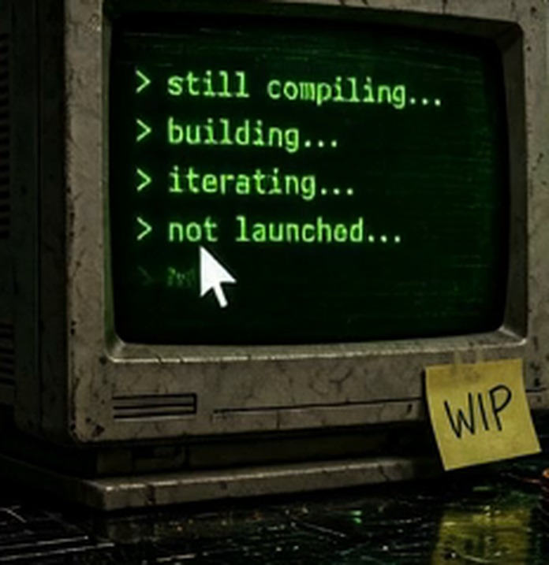
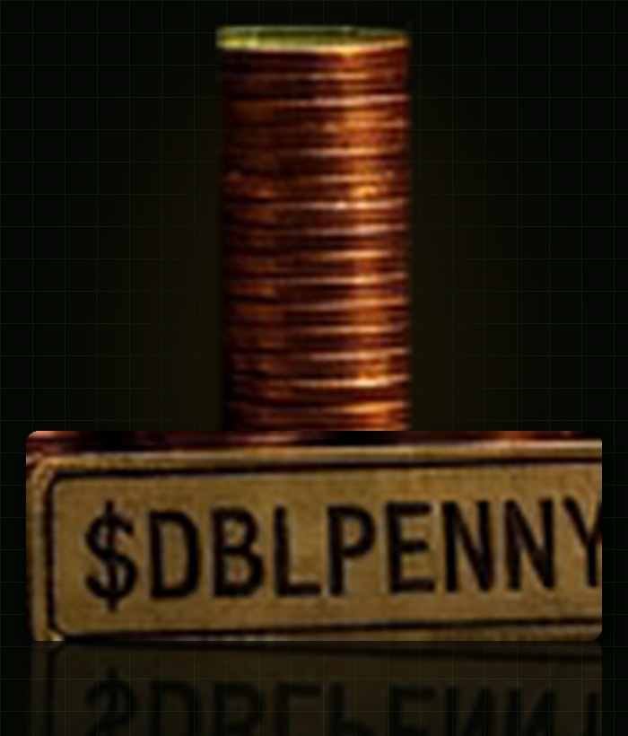

$STILLCOMP
The Process
A tribute to builders, creators, and everyone still compiling. It is not a live token. Status: not launched, and no contract exists.
Learn more →Compile Oddity — Different by design.
Three identities. Two accounts. One evolving story.
The dashboard and transparency hub for Compile Oddity



The Process
A tribute to builders, creators, and everyone still compiling. It is not a live token. Status: not launched, and no contract exists.
Learn more →The Growth
A 30-day fictional doubling experiment. The counter is a story device, not the token’s price, and future chapters are undecided. Status: $DBLPENNY is launched on Solana.
The Watchdog
A symbolic watchdog, not a security or monitoring service. It does not scan, audit or protect anything, and does not vouch for any token. Status: $CHOMP is launched on Solana.
Learn more →Transparency — contracts, wallets, purchases, and the transaction log
The three identities are told through two X accounts. There is no separate CHOMP account.